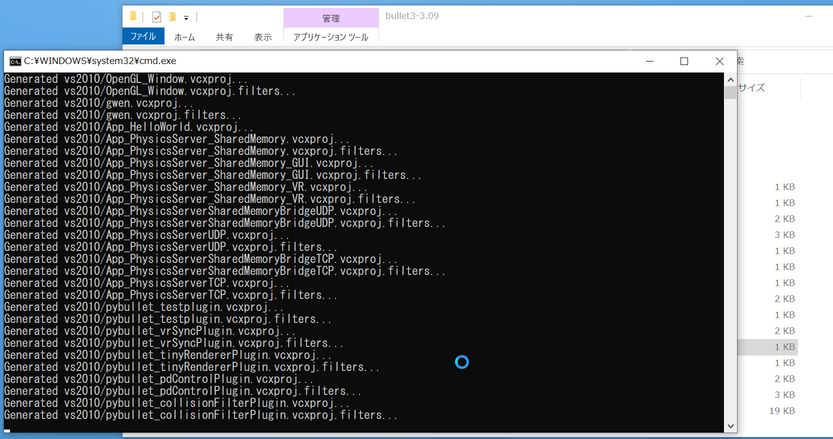
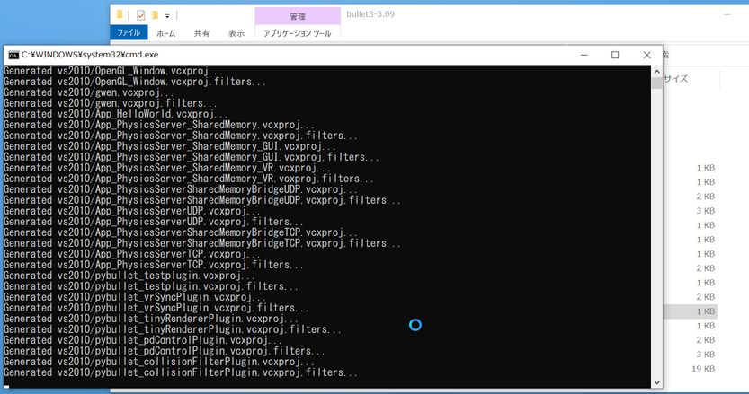
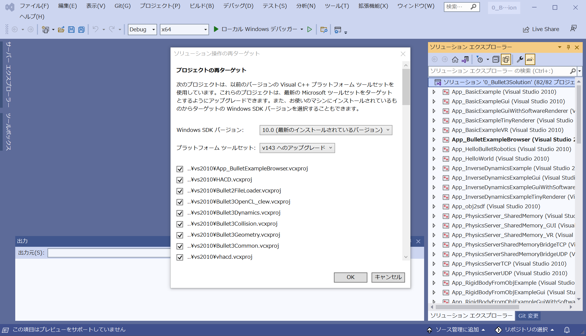
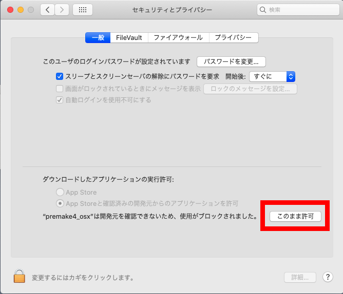
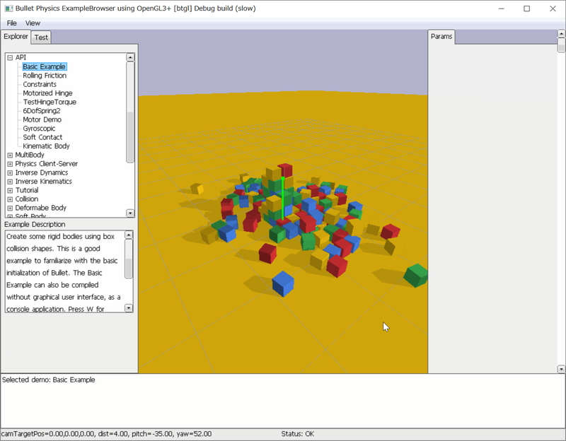

物理シミュレーションエンジンbulletについて
Bullet(Bullet Collision Detection and Physics library) は衝突判定， 剛体運動ライブラリであり，オープンソース(ZLibライセンス, 商用利用も無料で可能) で提供され， Playstation3 にも搭載されており，マルチプラットフォーム(PS3, XBox360, Wii, Win32, Linux, MacOSX など) をサポートしている． 詳しくは，Bullet PhysicsのWebページ(https://pybullet.org/wordpress/)参照．
ダウンロードと開発環境用ファイル生成
Bullet3 Releasesのページから 最新版をダウンロードする． この実験ではC/C++版を使うので，「PyBullet 3.1.7 / Bullet Physics 3.17」という項目の「Assets」をクリックして， Source code (zip) もしくはSource code (tar.gz)をクリックしてダウンロードする． ダウンロードしたら適当なフォルダに解凍する．以下，解凍したフォルダをBULLETとする．
実習室のPCではダウンロードフォルダがネットワークドライブになっているからか，ダウンロードが不完全になっていることがある (この場合，解凍時にエラーが出るか，ビルドしようとするとファイルが足りないといわれる)． この場合は再ダウンロードすること．
現在bulletはGPUを用いたbullet3へ移行しているところであるが，この実習では実習室のPC環境からbullet3の機能は使わず， 従来のbullet2のみを用いる
BULLET/build3フォルダには各種開発環境用のファイルを作成するプログラム premake が含まれている． Visual Studio用のビルドファイル(プロジェクトファイルとソリューションファイル)を作成するには， BULLET/build_visual_studio_vr_pybullet_double_dynamic.batをダブルクリックで実行する (現在のbulletでは強化学習やVR機能をサポートしたpybulletが含まれている．これらを使いたい場合は，build_visual_studio_vr_pybullet_double.batなどを実行する)． コマンドプロンプトが出て"Generating..."という文がたくさん出て，プロンプトが自動で閉じられたら， BULLET/build3/vs2010フォルダができる．
 ⇒ 
⇒ 
Visual Studio開発環境用ファイルの生成
ダブルクリックの実行でvs2010がないといったメッセージが出る場合やダブルクリックしても反応がない場合は， スタートメニューのVisual Studio 2017(もしくはVisual Studio 2019/Visual Studio 2022)フォルダの中にある， 「開発用コマンドプロンプト for VS2017」(もしくは "Developer Command Prompt for VS2019"/"Developer Command Prompt for VS2022")を開き， cdコマンドでBULLETフォルダまで移動してbatファイルを実行する． 以下は全学計算機システムでBULLETフォルダをデスクトップに置いている場合のコマンドの例．
Z: cd Desktop\bullet3-3.17 build_visual_studio_vr_pybullet_double_dynamic.bat
bullet physicライブラリのビルド方法 for VisualStudio
BULLET/build3/vs2010フォルダ中の
BULLET\build3\vs2010\0Bullet3Solution.sln
をVisual Studio 2017/2019/2022で開く．「プロジェクトの再ターゲット」というウィンドウが出たら， %「Windows SDK バージョン」が「10.0（最新のインストールされているバージョン）」， 「プラットフォームツールセット」がVS2017なら「v141へのアップグレード」 (VS2019なら「v142へのアップグレード」/VS2022なら「v143へのアップグレード」) になっていることを確認の上，OKボタンをクリックするとVS2017/2019/2022用のプロジェクトへの変換が始まる．

プロジェクトの再ターゲット．Windows SDKバージョンのところの数値は環境によって多少変わる可能性もあるので注意
0Bullet3Solution.slnにはたくさんのプロジェクトが含まれているが， Bulletライブラリは， Bulletから始まるものとLinearMathである． (Bullet3から始まるものはbullet3のライブラリ， OpenGL_Windowはデモプログラムを動かす際に必要になる)．
Release,x64もしくはDebug,x64で，ビルド → ソリューションのビルド を実行する (サンプルプログラムはx64のみなのでRelease/Debugの右のところがWin32になっていたらx64に変えること！)． ただし，すべてのプロジェクトをビルドすると約600MBにもなるので， ディスクスペースに余裕がない場合は，上であげた必要なものと実行したいデモプロジェクトのみビルドする， もしくは，ディスク容量を確保してからビルドすること． すべて正常終了したらビルド成功である． ビルドに失敗した場合はエラーをチェックし，必要に応じて修正しよう． ただし，全てのプロジェクトが正常終了していなくても， BulletCollision,BulletDynamics,BulletSoftBody,LinearMathの4つが成功していれば実験上は問題ない (実際にこちらの環境でVS2022Communityでビルドしたら12プロジェクトほど失敗してました...)

Bulletのビルド．
実習室のPCではダウンロードのところでも書いたようにネットワークドライブを使っている関係上， そのままだとビルドに非常に時間がかかる． もしビルド時間を短くしたいならば，CドライブもしくはUSBメモリ(USB3.0推奨)上に一時的なフォルダを作成し， その中にBULLETフォルダごとコピーしてビルドすると速くなる． ただし，Cドライブは再起動するとリセットされるので，PCをシャットダウンする前に， 必要なファイルを自分のフォルダにコピーしておくこと．
正常にビルドできていれば，BULLETにたくさんの実行ファイルが生成されている． それがデモプログラムの実行ファイルである． また，BULLET\binに*.libファイルができているはずである 実験のサンプルプログラムを動かすのに最低限必要なのは， BulletCollision_vs2010_x64_*.lib, BulletDynamics_vs2010_x64_*.lib, BulletSoftBody_vs2010_x64_*.lib, LinearMath_vs2010_x64_*.libの4つである (*の部分はRelaseモードだとrelease, Debugモードだとdebugとなっている)． なお，ファイル名にvs2010とあるがちゃんと実行環境(VS2017/2019/2022)に合わせたものになっている(気になる人はリネームしてもOK)．
全学計算機リモートデスクトップ環境のVisual Studio 2017 Professionalでビルドした場合，BulletSoftBody_vs2010_x64.libの生成に失敗する可能性がある． その場合はTeamsの一般チャネル→ファイルにこちらでビルドしたBulletSoftBody_vs2010_x64.libを入れてあるのでそれを使ってほしい．
bullet physicライブラリのビルド方法 for Mac(gmake)
Mac OS XでのBulletのビルド方法についてはここをクリック
Mac(もしくはLinux)環境でもWindowsと同様にしてpremakeを使ってビルド用のファイル(ここではMakefile)を作ることができる． ターミナルを開いて，cdコマンドでBULLETフォルダに移動し，premakeでMakefileを生成した後，makeコマンドでライブラリをビルドする． 以下はホームフォルダ直下にbulletのファイルを解凍したときのコマンド例である．
cd ~/bullet3-3.17/build3 ./premake_osx gmake
ここで，「"premake4_osx"は，開発元を検証できないため開けません」といったダイアログが出た場合は，一旦「キャンセル」をクリックし， 環境設定→セキュリティとプライバシーを開くと，以下の図のように"premake4_osx"についての確認があるので，「このまま許可」をクリックする．

そして，ターミナルに戻り，再度「./premake_osx gmake」を実行すると，もう一度同じダイアログが出るが， 以下の図のように「開く」というボタンが追加されているのでこれをクリックする．

Generating ...というのがたくさん表示され，最後に"Done."と表示されればgmakeフォルダ内にMakefileの生成に成功しているので， 後はgmakeフォルダに移動して，makeでビルドすれば良い．
cd gmake make config=release64
環境によってはいくつかエラーが出るかもしれないが，Visual Studioの場合と同様に， libBulletCollision_*.a, libBulletDynamics_*.a, libBulletSoftBody_*.a, libLinearMath_*.a の4つのライブラリファイルがBULLET/binフォルダ内にできていれば問題ない．また，
make config=debug64
とすることで，Debugモード(最適化なし/デバッグ情報あり)用のライブラリも作ることができる．
ライブラリファイルのコピー
ビルドした*.libファイル(BulletCollision_*.lib, BulletDynamics_*.lib, BulletSoftBody_*.lib, LinearMath_*.lib)を 前回ダウンロードした実験用のサンプルプログラムの
shared\lib
にコピーしておく(Macでビルドした場合はlibBulletCollision_*.aのような名前のファイルをコピー)． *_debug.libの場合できれば*.pdbファイルもコピーする． 可能ならばRelease,Debug両方でビルドしてコピーしておいてほしい．
また，BULLET\srcフォルダの中身をそのまま，
shared\inc
にコピーする． なお，sphereプロジェクトではBulletで使われているベクトル型btVector3やスカラ型btScalarを使うために， すでにLinearMathフォルダが含まれている．これらは上書きしてしまってかまわない．
以降は以下のようなフォルダ構成を前提とする．
bin : 実行フォルダ
shared --- dll : 実行時に必要なファイル置き場(glew,glfw用,bulletはなし)
|- inc : インクルードフォルダ
|- lib : ライブラリフォルダ
src : ソースコードフォルダ(プロジェクトごとにサブフォルダ作成)
デモプログラムの実行
ビルドによりBULLET/binにできたデモプログラムを動かして， どんなことができるのかを確認してみよう．
bullet3のデモはApp_BulletExampleBrowserにまとめられている．Visual Studio上でApp_BulletExampleBrowserを右クリックして， スタートアッププロジェクトに設定し，実行してみよう(もしくはBULLET/bin/App_BulletExampleBrowser_vs2010_x64_*.exeをダブルクリックで実行)． なお，App_BulletExampleBrowserのビルド時に"引数1を'const char*'から'LPCWSTR'へ変換できません"というエラーが出る場合は， Visual Studio上のApp_BulletExampleBrowserを右クリック->プロパティで全般の中の文字セットというところを"マルチバイト文字セットを使用する"に変更して再ビルドすると解決する．
Mac環境の場合は，ターミナルでBULLET/binに移動して，
./App_BulletExampleBrowser_gmake_x64_releaseと実行すれば良い．

Bullet Physicsのデモプログラム
App_ExampleBrowserではCtrl+左ドラッグで視点回転，Ctrl+右ドラッグ or マウスホイールでズーミングが出来る． また，左クリックで物体をつかんでドラッグで移動させることができる． さらに，BULLET/examplesフォルダにソースコードがあるので，最終的なアプリケーション開発時に参考にすると良い．
ドキュメント
BULLET/docsフォルダ内にユーザマニュアルPDF(Bullet_User_Manual.pdf)があるので， コーディングするときはこちらを参考にしてほしい。 以降の説明でユーザマニュアルという言葉が出てきたらこのファイルのことを示している．
Bullet PhysicsのWebページの左上の"DOCUMENTATION"からも ユーザマニュアル等のページにアクセスできる． また，APIリファレンスもWebから利用できる( Bullet Collision Detection & Physics Library)． 実際の機能や使い方は各自で試して学ぼう．
基本的なプログラミング
前回作成したボール発射プログラムをBulletでボールの動きを計算するように変更することで，
Bulletの基本的な使い方を学ぶ．
まず，前回のプログラムをコピーして新しいプロジェクトを作ろう．
(sphereフォルダがある)srcフォルダ内に適当な名前のフォルダ(以下ではbtsphereとする)を作り，
src\sphereフォルダの中身をすべてコピーしよう
(sphereプロジェクトを開いているとコピー時に警告が出るので閉じてからコピーする)．
以下では，btsphere内のsphere.slnを開いて，main.cppを編集していく．
インクルードファイルとライブラリファイル
Bulletを使うために最低限必要なインクルードファイルを設定する．
#include <btBulletDynamicsCommon.h>
また，プロジェクトのプロパティで
リンカー → 入力 → 追加の依存ファイル
LinearMath_vs2010_x64_release.lib; BulletCollision_vs2010_x64_release.lib; BulletDynamics_vs2010_x64_release.libを設定する (Releaseモードの場合．Debugモードの場合は*_debug.libに変えること)． もしくは，main.cppの冒頭に
#ifdef _DEBUG #pragma comment (lib, "LinearMath_vs2010_x64_debug.lib") #pragma comment (lib, "BulletCollision_vs2010_x64_debug.lib") #pragma comment (lib, "BulletDynamics_vs2010_x64_debug.lib") #pragma comment (lib, "BulletSoftBody_vs2010_x64_debug.lib") #else #pragma comment (lib, "LinearMath_vs2010_x64_release.lib") #pragma comment (lib, "BulletCollision_vs2010_x64_release.lib") #pragma comment (lib, "BulletDynamics_vs2010_x64_release.lib") #pragma comment (lib, "BulletSoftBody_vs2010_x64_release.lib") #endif
と記述することでもライブラリをリンクできる(SoftBodyは今回のプログラムでは必要ないですが今後使うので入れてます)． ただし，上記のpragmaによるリンクはVisual Studio用であり他の環境で使えるかは保証しない (mac用ではMakefile内に記述しています)． また，ライブラリディレクトリ(shared/lib)はプロジェクト設定で追加の依存ライブラリディレクトリとして設定されているものとする．
Bulletワールドの初期化と破棄
まず，物理計算を行うためにシミュレーション空間であるワールドを定義し，
ワールドに剛体オブジェクト(以降RigidBody)や重力などのパラメータ，
後に述べる衝突検出方法などを設定する必要がある．
ここでは最低限必要なものだけ設定する．
Bulletワールドにアクセスするための変数と ボール用のRigidBody変数をグローバル変数として定義する．
btDynamicsWorld* g_dynamicsworld = 0; //!< Bulletワールド btRigidBody* g_ballbody = 0; //!< 球体
そして，Bulletワールドを初期化するための関数InitBulletを定義する． (コードの理解のためになるべくコピペしないで自分で書いてみよう)．
void InitBullet(void)
{
btVector3 pos = btVector3(-1, 0.5, 0); //!< 中心座標
btScalar mass = 0.03; //!< 質量
btScalar restitution = 0.8; //!< 反発係数
// 衝突検出方法の選択(デフォルトを選択)
btDefaultCollisionConfiguration *config = new btDefaultCollisionConfiguration();
btCollisionDispatcher *dispatcher = new btCollisionDispatcher(config);
// ブロードフェーズ法の設定(Dynamic AABB tree method)
btDbvtBroadphase *broadphase = new btDbvtBroadphase();
// 拘束(剛体間リンク)のソルバ設定
btSequentialImpulseConstraintSolver* solver = new btSequentialImpulseConstraintSolver();
// Bulletのワールド作成
g_dynamicsworld = new btDiscreteDynamicsWorld(dispatcher, broadphase, solver, config);
g_dynamicsworld->setGravity(btVector3(0, -9.8, 0));
// 球体形状を設定
btCollisionShape *sphere_shape = new btSphereShape(g_ballrad);
// 球体の初期位置・姿勢
btQuaternion qrot(0, 0, 0, 1);
btDefaultMotionState* motion_state = new btDefaultMotionState(btTransform(qrot, pos));
// 慣性モーメントの計算
btVector3 inertia(0, 0, 0);
sphere_shape->calculateLocalInertia(mass, inertia);
// 剛体オブジェクト生成(質量，位置姿勢，形状，慣性モーメントを設定)
g_ballbody = new btRigidBody(mass, motion_state, sphere_shape, inertia);
// ワールドに剛体オブジェクトを追加
g_dynamicsworld->addRigidBody(g_ballbody);
}
InitBullet()関数はInit関数内か，main関数の中のmain loopより前で呼び出すようにしておく． また，プログラム終了時にワールドを破棄するための関数として以下のCleanBullet関数を記述する．
void CleanBullet(void)
{
// オブジェクト破棄
delete g_ballbody->getMotionState();
g_dynamicsworld->removeRigidBody(g_ballbody);
delete g_ballbody;
// ワールド破棄
delete g_dynamicsworld->getBroadphase();
delete g_dynamicsworld;
}
CleanBullet関数はプログラム終了時に呼ばれるClean関数からか， main関数の中のmain loopの後で呼び出すようにしておく．
ボール中心座標の取得と描画
ボールの描画自体はOpenGLを用いて行っているため，
移動した後の座標値をBulletから取得する必要がある．
Display関数の
glTranslatef(g_ballpos[0], g_ballpos[1], g_ballpos[2]);
のところを，
btVector3 pos = g_ballbody->getCenterOfMassPosition(); glTranslatef(pos[0], pos[1], pos[2]);
と置き換えてみよう． getCenterOfMassPosition()はbtRigidBodyクラスのメンバ関数であり， 重心の座標値を取得できる． (C言語でいうとbtRigidBodyという構造体に関数が定義されていて， それを呼び出すと座標値が得られる．構造体の変数にポインタを使った場合は ``.''(ピリオド)ではなく ``->''を使う．) ここ以外でもボールの中心座標を得る必要がある箇所に関しては，上記のように書き換えてみよう．
時間ステップ
シミュレーションステップを進めるTimer関数を以下のように書き換える．
ただし，ボールの軌跡を取得する部分をここに書いていた場合は，
上記のgetCenterOfMassPosition()を使って適宜書き換えて追加しておくこと．
void Timer(void)
{
// 球体の放物線運動を計算
if(g_animation_on){
if(g_currentstep == 0){
g_ballbody->applyCentralImpulse(g_frc*g_dt);
}
// bulletのステップを進める
if(g_dynamicsworld){
g_dynamicsworld->stepSimulation(g_dt, 1);
}
g_currentstep++;
}
}
一番最初にapplyCentralImpulse()関数でボールの中心に撃力(impulse)を加えて あとは，g_pDynamicsWorld->stepSimulation(DT, 1);でタイムステップを進めるだけである． オブジェクトをさらに追加した場合でもTimer関数内には変更がない． stepSimulation関数内ですべて処理してくれるからである． stepSimulation関数の引数はタイムステップ幅，最大サブステップ数である． Bulletではより安定した動作が必要なときは内でさらに時間を分割することもできる． それがサブステップである．必要ないときは最大サブステップ数に1か0を指定しておけばよい．
練習問題1
サンプルプログラムのBulletを使った改造を実際にやってみて，動作を確認してみよう．
btRigidBodyについて
Bulletでは
- 質量，慣性モーメント(慣性テンソル) : mass and inertia
- 位置・姿勢 : motion state
- 形状 : collision shape
をまとめたものをbtRigidBodyとして定義し， btRigidBodyを介して，動きの制御や形状の取得を行う．
質量はユーザが設定し， 各形状クラスに定義されたcalculateLocalInertia関数に質量を与えることで計算される． 位置・姿勢に関しては，btDefaultMotionState変数として，姿勢を表す四元数(btQuaternion)と位置座標(btVector3)をまとめて扱う． そして，形状はbt***Shapeクラスとして定義される． どのような形状が扱えるのかはユーザマニュアルのp.18以降を参考にしてほしい． 最終的には三角形メッシュ(btConvexTriangleMeshShapeやbtBvhTriangleMeshShape)を使えば， 近似的にではあるがあらゆる形状を扱える．
btRigidBodyはこれらの情報をまとめるほかに， 摩擦や反発係数，速度(角速度)など剛体の運動を扱うために必要なパラメータが定義されている． また，質量と動きの設定によりRigid Bodyは以下の3種類に分類される．
-
動力学(動作)剛体(Dynamics (moving) rigidbodies)
- 質量が正の値
- 毎シミュレーションステップで動力学に基づきその位置と姿勢が更新される
-
静的剛体(Static rigidbodies)
- 質量が0
- 衝突が起こっても動かない(動力学剛体と衝突はする)
-
運動学剛体(Kinematic rigidbodies)
- 質量が0
- ユーザ操作に従って動くという点以外は静的剛体と同じ
練習問題2
地面を追加して，ボールが地面上をはねるかを確かめてみよう．
地面のような動かないオブジェクト(以下，静的オブジェクト)を定義するには，
btRigidBodyに質量0，慣性モーメント(0,0,0)を設定する．
そうすると，タイムステップが進んだり，衝突が発生しても運動せずにその場に静止する(静的剛体)．
地面の形状定義にはbtStaticPlaneShapeかbtBoxShapeがよい．
これらの形状を新しいbtRigidBodyに設定してやることで剛体を追加できる．剛体の細かな追加方法はInitBullet関数を参照すること．
btStaticPlaneShape は法線方向と平面定数を引数として取る(平面がax+by+cz+d=0で定義されるとき，法線はbtVector3型で(a,b,c),定数部はd)．
例えば，鉛直上向きの平面を作る場合は法線(0,1,0)を設定し，dを0とすると(0,0,0)を通る平面となる．
btBoxShapeは引数としてbtVector3をとり，各辺の長さの半分(half extents)を指定する．
以下にOpenGLを使ってbtBoxShapeを描画するプログラムの例を示す．
glPushMatrix(); btVector3 pos = g_groundbody->getCenterOfMassPosition(); glTranslatef(pos[0], pos[1], pos[2]); const btBoxShape* boxshape = static_cast<const btBoxShape*>(g_groundbody->getCollisionShape()); btVector3 half_extent = boxshape->getHalfExtentsWithMargin(); glScaled(2*half_extent[0], 2*half_extent[1], 2*half_extent[2]); DrawCubeVBO(); glPopMatrix();
DrawCubeVBO関数はutils.hにこちらの方で定義している立方体描画用関数である(原点中心で辺の長さ1の立方体を描画する)． また，上記では地面を定義した変数(btRigidBody型)をg_groundbodyとしているが，これは自分の定義した変数名に合わせて適宜変えること．
練習問題3
ボール，地面それぞれのRigidBodyにsetRestitutionメンバ関数を使って反発係数を設定してみよう．
練習問題4
bt***Shapeを様々に変えてボールの形状を変更してみよう．どのような形状があるのかはBullet User Manualの第4章を参照．
ただし，bulletに登録した形状を変えたらそれに合わせて描画の方も変更する必要がある．
例えばbtBoxShapeを使った場合は，2で示したようにDrawCubeVBOを使う．
また，この場合，球形状と異なり回転に関する情報も取得する必要があるので，
前回のページの回転に関する課題1でも用いたglMultMatrixfに姿勢行列を渡すことで回転を描画に反映させる．
BulletはOpenGLと親和性が高く，OpenGLの変換行列を出力する関数が用意されている．
例えば，btBoxShapeクラスのオブジェクトとしてg_pBoxBodyを定義したとすると，
GLfloat m[16]; btDefaultMotionState *motion = static_cast<btDefaultMotionState*>(g_pBoxBody->getMotionState()); motion->m_graphicsWorldTrans.getOpenGLMatrix(m);
とするとglMultMatrixfに渡すための行列m[16]が取得できる．なおこの行列には平行移動成分も含まれているので， 中心座標を取得してglTranslatefで移動させていた部分は必要なくなる．
DrawCubeVBO関数の他にも，円筒形状を描画するDrawCylinderVBO関数(半径0.5(直径1)/長さ1/中心軸はz軸)， 円錐形状を描画するDrawConeVBO関数(底面半径0.5(直径1)/高さ1/中心軸はz軸)， 円筒の両端面に半球がついたカプセル形状を描画するDrawCapsuleVBO関数(こちらは半径と長さを引数で指定する/中心軸はz軸)， 平面を描画するDrawPlaneVBO関数(法線ベクトル(0,1,0)/y方向の高さ及び大きさは引数で指定)， などを用意してあるので有効活用してほしい．
練習問題5
球体以外の形状にしたら，初期トルクをbtRigidBody::applyTorqueImpulse関数を使って与えてみよう． また，btRigidBody::applyImpulse関数を使うと撃力を重心以外に加えられる(つまりトルクも発生する)． applyImpulse関数で任意の場所(重心からの相対座標値)に力を加えてみよう．